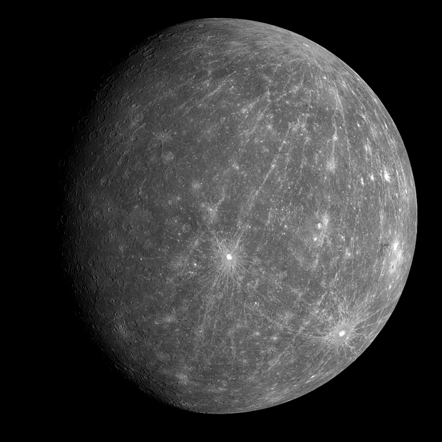

Experimentelle Programmierung 1
Dieser Text wird gerade auf Fehler geprüft:
Der Merkur
| Perihel(in AE) |
|0,307498 |
| Aphel(in AE) |
|0,466701 |
| Durchmesser(Äquator) |
|4.879,4 km |
| Umlaufzeit |
|87,969 Tage |
| Masse |
|3,301 · 1023 kg
|(0.06 Erdenmassen) |
| Dichte |
|5,427 g/cm3 |
| Hauptbestandteile |
|Sauerstoff,
|Natrium,
|Wasserstoff
|
Dauer eines Tages
(Rotationsperiode)
|
|58 d 15 h 36 min (Erdenzeit)
| |
| Oberflächentemperatur |
|Min: −173 °C
|Max: +427 °C |
| Anzahl der Monde |
|0 |
Merkur hat nur wenig durchschnittliches, schließlich ist er der leichteste, der kleinste, mit 48.000km/h der schnellste und sogar mit durchschnittlich 58 Millionen km Abstand der Sonnennächste Planet unseres Sonnensystems. Merkur besitzt auch keine nennenswerte Atmosphäre und dreht sich sehr langsam um die eigene Achse, weshalb es zu Temperaturunterschieden von ca. -180°C zu ca. +430°C kommt.
Die raue Oberfläche des Planeten ist darauf zurückzuführen, dass er erstens weder Wind noch Wetter noch starken Vulkanismus hat, weshalb die, durch Asteroiden entstandene Kraterlandschaft weitestgehend unverändert bleibt.
Zweitens durchläuft der Merkur allerdings auch einen in unserem Sonnensystem einzigartigen Vorgang: er schrumpft. Das schrumpfen zeigt sich dadurch, dass sich seine Gesteinsplatten übereinander schieben und hunderte km lange und km hohe Steilhänge damit erschaffen. Er schrumpft wahrscheinlich, da sein, im Vergleich zum restlichen Planeten, riesiger Eisenkern abgekühlt ist und damit den Durchmesser des Merkurs um rund 40 km verringert hat.
Sein astronomisches Symbol sieht so aus ☿ und er ist nach dem römischen Gott der Händler und der Diebe benannt.
Er ist, mit der Venus, der einzige Mondlose Planet weshalb sich die Theorie entwickelte, dass er der ehemalige Mond der Venus war und sich von ihr losgelöst hat.
Joshua Halfmann

Der Merkur.
(als CC0 freigestelltes Bild von Pixabay.com)